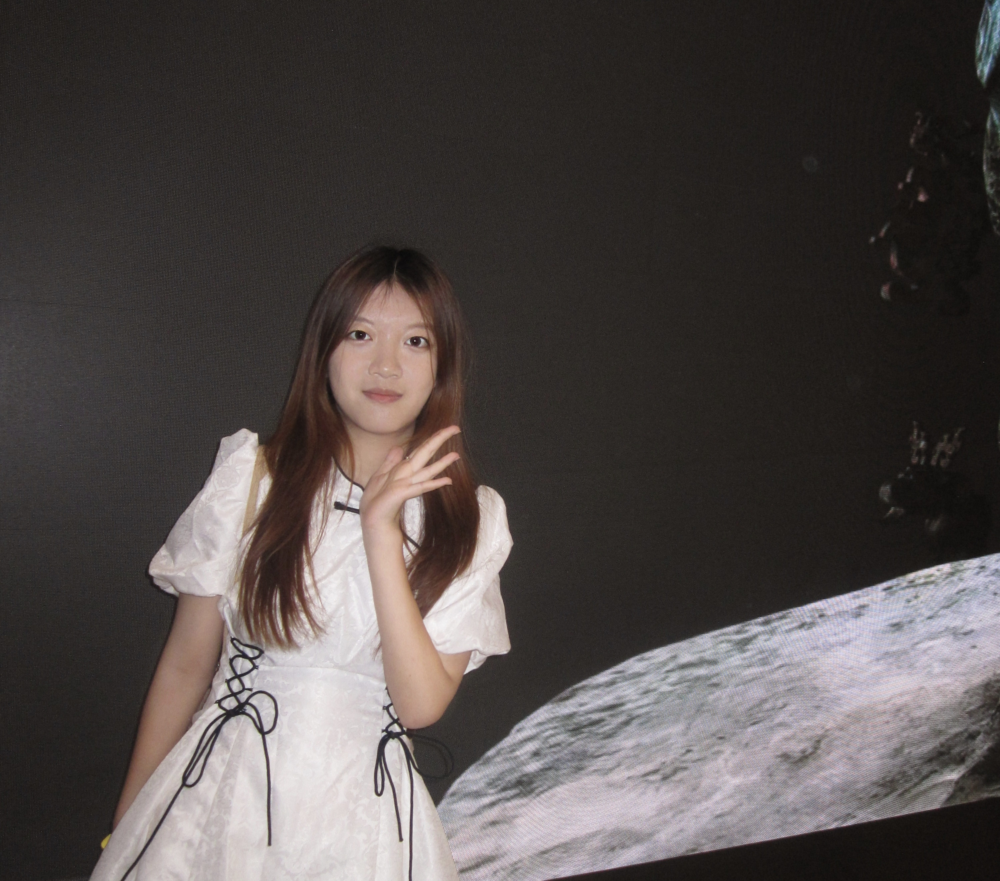
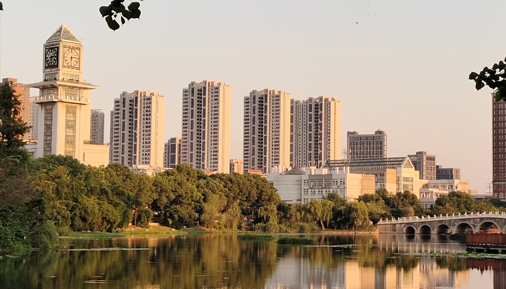
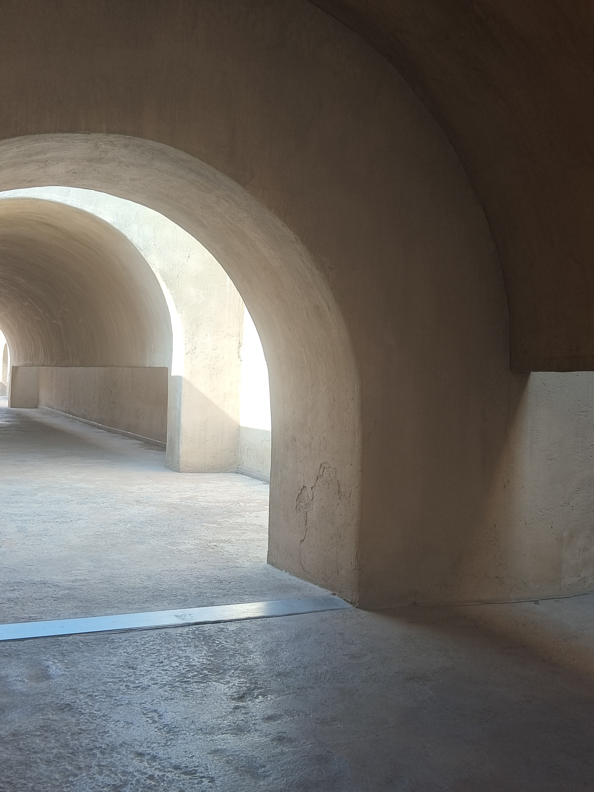
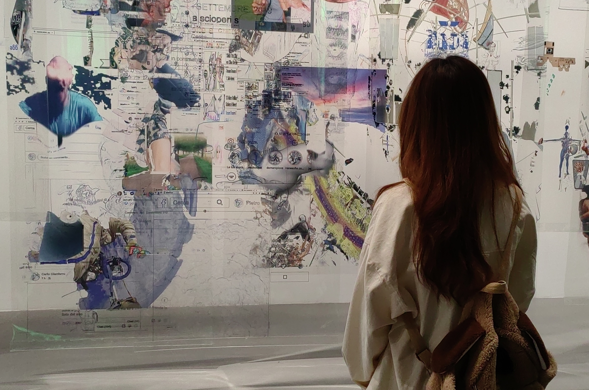

哈喽,我是来自ZUEL信息安全专业的田佳芮,
很高兴能够在这里遇到你。我是一个积极主动、乐观向上、有想法有行动、热爱生活的人。
我出生在夏天,有着这个季节的热情,希望我们可以成为朋友!
热爱生活,就是在平凡的日子里也能拥有惊喜和喜悦,
因为只要心中充满了爱和热情,生活便会变得更加美好,所以让我们一起热爱生活,享受每一个当下。
我喜欢感受生活中的美好点滴，希望这些也能带给你愉悦的体验~


我热爱旅行，每一次踏足新的土地，都仿佛打开了一扇通往未知世界的门。
在旅途中，我热衷于用相机捕捉那些瞬间的美好：晨曦中的古镇、夕阳下的海岸线、
还有那些不经意间流露出的生动表情。每一张照片都是时光的印记，记录着我与世界的每一次邂逅。
每个人都是一个复杂的个体,
小小页面无法容纳下我天马行空的思想的万分之一,我喜欢写日记来记录自己的奇思妙想,
在阅读中感悟作者的想法、体会书中人物的喜怒哀乐,同时我热爱美食,对小动物有着非一般的耐心......
如果你感兴趣的话,请阅读这份“简历”吧！
